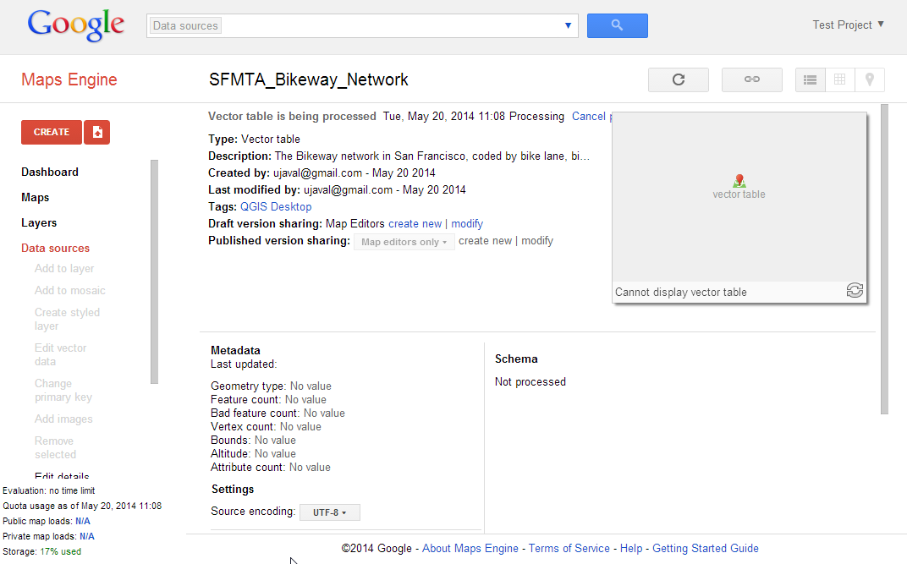

Eșantionarea datelor raster, folosind puncte sau poligoane
[ Download PDF A4 Letter ]
Mai multe seturi de date științifice și de mediu vin sub formă de grilă raster. Datele de elevație (DEM) sunt, de asemenea, distribuite ca fișiere raster. În aceste fișiere raster, parametrul reprezentat este codificat sub formă de valori ale pixelilor rasterului. Adesea, este nevoie să extragem valorile pixelilor din anumite locații sau de a le agrega pe un anumit domeniu. Această funcționalitate este disponibilă în QGIS prin două plugin-uri - Point Sampling Tool și Zonal Statistics plugin.
Privire de ansamblu asupra activității
Având la dispoziție o grilă raster a temperaturilor maxime din SUA, va trebui să extragem temperaturile tuturor zonele urbane și, de asemenea, să calculăm temperatura medie pentru fiecare stat din Statele Unite ale Americii.
Alte competențe pe care le veți dobândi
Procedura
Mergeți la , navigați catre fișierul descărcat us.tmax_nohads_ll_{YYYYMMDD}_float.tif și faceți clic pe Open.

O dată ce stratul este încărcat, selectați instrumentul Identify, apoi faceți clic oriunde, pe strat. Veți vedea, fie valoarea temperaturii în celsius, fie valoarea Benzii 1 de la acea locație.

Acum, dezarhivați fișierul descărcat 2013_Gaz_ua_national.zip și extrageți fișierul 2013_Gaz_ua_national.txt pe disc. Mergeți la .

În fereastra de dialog Create a Layer from Delimited Text File, faceți clic pe Browse și deschideți 2013_Gaz_ua_national.txt. Alegeți Tab din Custom delimiters. Coordonatele punctului sunt în Latitudine și Longitudine, astfel că, selectați INTPTLONG pentru X field și INTPTLAT pentru Y field. Bifați caseta Use spatial index și faceți clic pe OK.

Acum suntem gata pentru a extrage valorile temperaturii din stratul raster. Instalați plugin-ul Point Sampling Tool. Pentru detalii cu privire la modul de instalare a plugin-urilor, parcurgeți Utilizarea Plugin-urilor.

Deschideți fereastra de dialog a plugin-ului, de la .

În fereastra de dialog Point Sampling Tool, alegeți 2013_Gaz_ua_national pentru Layer containing sampling points. Trebuie să selectăm în mod explicit câmpurile din stratul de intrare pe care le dorim în stratul de ieșire. Alegeți câmpurile GEOID și NAME din stratul 2013_Gaz_ua_national. Putem eșantiona valorile din multiple benzi raster dintr-o dată, dar din moment ce rasterul nostru are doar o bandă, alegeți us.tmax_nohads_ll_{YYYYMMDD}_float: Band 1. Denumiți stratul vectorial de ieșire ca max_temparature_at_urban_locations.shp. Clic pe OK pentru a porni procesul de eșantionare. Clic Close, la încheierea procesului.

Veți vedea un nou strat, max_temparature_at_urban_locations, încărcat în QGIS. Folosind instrumentul Identify, faceți clic pe oricare punct, pentru a-i vedea atributele. Veți vedea câmpul us.tmax_no - care conține valoarea pixelilor raster de la locația punctului.

Prima parte a analizei s-a încheiat. Haideți să înlăturăm straturile inutile. Mențineți apăsată tasta Shift, apoi selectați straturile max_temparature_at_urban_locations și 2013_Gaz_ua_national. Clic-dreapta și apăsați Remove, pentru a le elimina din Cuprinsul QGIS.

Mergeți la . Navigați la fișierul descărcat tl_2013_us_county.zip și faceți clic pe Open. Alegeți tl_2013_us_county.shp, apoi apăsați OK.

tl_2013_us_county va fi adăugat la QGIS. Stratul respectiv este în proiecția EPSG:4269 NAD83. Asta înseamnă că nu se potrivește cu proiecția stratului raster. Vom reproiecta acest strat pentru EPSG:4326 WGS84.

Faceți clic dreapta pe stratul tl_2013_us_county, apoi alegeți Save As...

În fereastra de dialog Save Vector layer as.., faceți clic pe Browse și denumiți fișierul de ieșire drept counties.shp. Alegeți Selected CRS din meniul dropdown CRS. Clic pe Browse, apoi alegeți WGS 84 pentru CRS. Bifați Add saved file to map și faceți clic pe OK.

Un nou strat numit counties va fi adăugat în QGIS.

Activați Zonal Statistics Plugins. Acesta este un plug-in de bază, deci este deja instalat. Parcurgeți Utilizarea Plugin-urilor, pentru a afla cum să activați plugin-urile de bază.

Mergeți la .

Selectați us.tmax_nohads_ll_{YYYYMMDD}_float pentru Raster layer, apoi sectoarele pentru Polygon layer containing the zones. Introduceți ZS_ în Output column prefix. Clic pe OK.

Analiza poate dura ceva timp, în funcție de mărimea setului de date.

După ce se termină procesarea, selectați stratul counties. Utilizați instrumentul Identify și faceți clic pe orice stat poligonal. Veți vedea trei noi atribute adăugate la stratul: ZS_count, ZS_mean și ZS_sum. Aceste atribute conțin numărul de pixeli raster, media valorilor pixelilor raster și, respectiv, suma valorilor pixelilor raster. Din moment ce ne interesează temperatura medie, vom utiliza câmpul ZS_mean.

Să stilizăm acest strat pentru a crea o hartă a temperaturii. Clic-dreapta pe stratul counties, apoi selectați Properties.

Comutați la fila Style. Alegeți stilul Graduated și selectați ZS_mean ca și Column. Modificați Color Ramp și Mode după dorință. Clic pe Classify pentru a crea clasele. Apăsați pe OK. (Pentru mai multe detalii despre stilizare, parcurgeți Noțiuni de bază despre stilizarea vectorilor.)

Veți vedea poligoanele statale stilizate, utilizând media temperaturii maxime extrasă din grila raster.